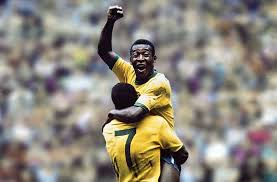
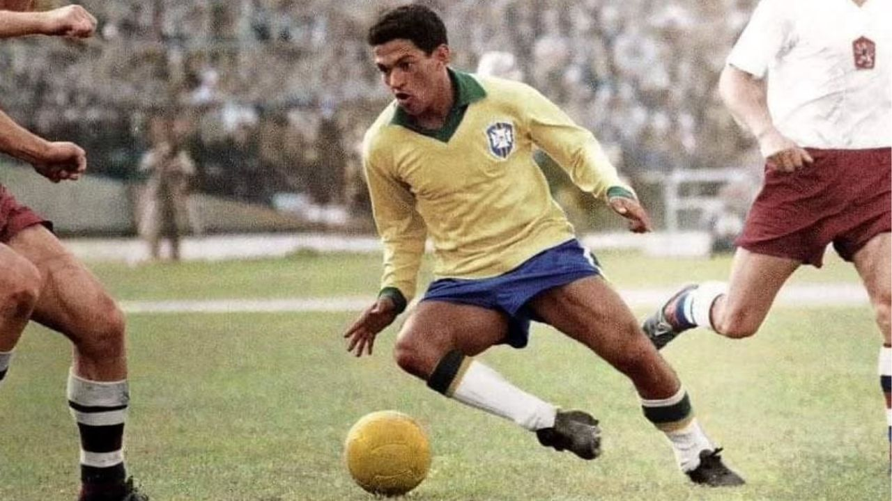
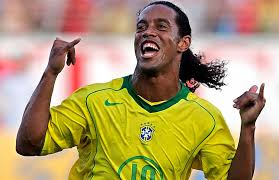
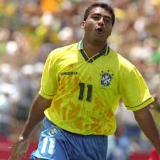
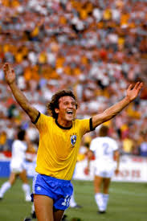
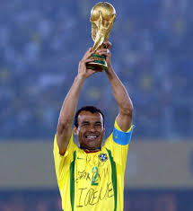
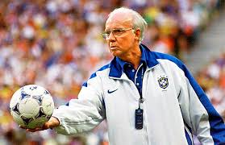
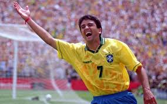

Pele
Gols: Pelé marcou 77 gols em 92 partidas oficiais e 3 Copas do Mundo 1958, 1962, 1970 e conhecido como rei do futebol


Gols: Pelé marcou 77 gols em 92 partidas oficiais e 3 Copas do Mundo 1958, 1962, 1970 e conhecido como rei do futebol

Jogos: 60 ,Vitórias: 52, Empates: 7, Derrotas: 1, Gols: 17,Títulos: Copas do Mundo de 1958 e 1962 e erra conhecido como genio das pernas tortas

62 gols oficiais em 99 jogos ,Ele foi bicampeão mundial 1994, 2002 e artilheiro da Copa de 2002 com 8 gols e conhecido como fenomeno

Jogos: 97, Gols: 33 ,Assistências: 29 Principais, Títulos: Copa do Mundo 2002, Copa América 1999, Copa das Confederações 2005 e conhecido como bruxo

Gols oficiais: 55 gols, Jogos: 70 jogos,Principais títulos: Copa do Mundo 1994, Copa América 1989, 1997, Copa das Confederações 1997 e muito conhecido por ser matador dentro da area

Gols: 79 gols , Jogos: 129 partidas,Assistências: 58 e ganhou copa america , olinpiadas e conhecido como principe

48 gols oficiais em 71 partidas ,Copas do Mundo: Participou de 1978, 1982 e 1986 e erra conhecido como galinho

Total de Jogos: 150 recordista histórico ,Gols: 5 ,Copas do Mundo: 4 edições 1994, 1998, 2002, 2006, Jogos em Copa do Mundo: 20 recordista,Vitórias em Copa: 16 recorde mundial,Títulos: 2 Copas do Mundo 1994, 2002, 2 Copas América 1997, 1999

Jogador 1958-1964: 37 jogos, 30 vitórias, 4 empates e 6 gols ,Treinador (1967-2002): Aproximadamente 131 a 157 jogos invencibilidade de 35 jogos entre 1970-73 ,Coordenador Técnico 1991-2006: 96 jogos, com 53 vitórias e 32 empates.

Aproximadamente 77 partidas e 40 gols ,Títulos: Campeão da Copa do Mundo 1994, Copa América 1989, 1997, Copa das Confederações 1997 e Pré-Olímpico 1987

A Seleção Brasileira é a entidade máxima do futebol, reconhecida pela FIFA como a mais bem-sucedida da história. Sua trajetória funde o esporte com a identidade cultural do Brasil, elevando o "jogo bonito" ao status de arte. A Era de Ouro O Brasil é o único Pentacampeão Mundial, vencendo em cenários e épocas distintas: 1958 (Suécia): O surgimento de Pelé aos 17 anos e o primeiro título, vencendo os donos da casa. 1962 (Chile): O brilho solitário de Garrincha após a lesão de Pelé, garantindo o bi. 1970 (México): Considerada a melhor seleção de todos os tempos, com o ataque formado por cinco camisas 10 (Pelé, Tostão, Jairzinho, Gérson e Rivelino). 1994 (EUA): O fim de um jejum de 24 anos, liderado pelo "Baixinho" Romário e uma defesa sólida. 2002 (Coreia/Japão): A consagração de Ronaldo Fenômeno, que superou graves lesões para liderar o time ao Penta com 100% de aproveitamento. Recordes Absolutos Presença Total: É a única seleção a participar de todas as 22 Copas do Mundo. Maior Vencedora: 5 títulos mundiais e 9 Copas América. Fábrica de Gols: Neymar é o maior artilheiro em jogos oficiais (79 gols), seguido por Pelé (77). Se contarmos amistosos contra clubes, Pelé soma 95 gols. Domínio Individual: O Brasil é o país com mais prêmios de Melhor do Mundo da FIFA (8 troféus no masculino: Ronaldo 3x, Ronaldinho 2x, Romário, Rivaldo e Kaká). O Rei: Pelé permanece como o único atleta a ter três medalhas de campeão mundial no currículo. Curiosidades Históricas A Camisa Canarinho: Nem sempre foi amarela. Após a derrota na final de 1950 (o Maracanazo), o uniforme branco foi considerado "azarado". Um concurso nacional escolheu o design amarelo com detalhes verdes de Aldyr Schlee em 1953. O "Quadrado Mágico": Ao longo das décadas, o Brasil sempre montou esquemas ofensivos lendários, como o de 2006 (Ronaldinho, Kaká, Ronaldo e Adriano), embora nem sempre resultassem em título. Domínio Continental: Além do sucesso mundial, o Brasil possui 4 títulos da Copa das Confederações, um recorde extinto do torneio. O Momento Atual (2026) Sob a gestão de Carlo Ancelotti, a Seleção busca o Hexa na Copa de 2026 nos EUA, Canadá e México. O time transita entre a experiência de Neymar e a explosão de jovens talentos como Vinicius Jr. e Endrick, tentando quebrar um jejum de títulos mundiais que dura 24 anos